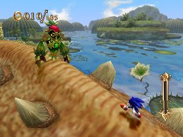

各ミッションの条件と有効なスキル説明
応用編
各ワールドには、全ワールド共通条件のミッションが幾つか存在しており、それらミッションについては、有効となるスキルもある程度共通していることから以下にそのミッション条件と有効スキルについての説明を行いたいと思います。
◆「ランページ！（マジンを倒せ）」ミッション
規定数のマジンを倒すことでクリアとなるミッションです。
基本的にマジンは「ホーミングアタック」をメインで倒していくことになりますが、「ファイヤーゲイズ」「ファイヤータックル」「ボルカノンスライダー」といった、通常アクションに攻撃力が付加されるスキルも併せて装備していると有利に進められます。
「ファイヤーゲイズ」

「ファイヤータックル」

「ボルカノンスライダー」
◆「ステルス アタック（マジンをたおさずに進め）」ミッション

ステージに存在するマジンを１体も倒さずにゴールすることでクリアとなるミッションです。
マジンが走って通り抜けられる場所に配置されてる場合は問題ないですが、ルートを塞ぐように配置されている場合はジャンプで通り抜けようとしても（ロックオンカーソルなどは通常通り表示されるため）、誤ってホーミングアタックが出てしまい易く、意外に難しいミッションとなっています。
◆「ダイハード チャレンジ（１度もたおれずに進め）」ミッション
ミス（リングがゼロの状態でダメージを受ける、即死ポイントに落下する）しないでゴールするとクリアになるミッションです。
「リングボーナス」「リングセーバー」といった、リングの減少を抑えるスキルが有効になります。
「リングセーバー」
◆「コレクトリング（リング集める）」ミッション
規定数のリングを集めることでクリアとなるミッションです。
タイムアタックを目指すプレイヤーであるならば、ミッションスタート時のリング数を増やす「リングボーナス」を装備することが必須となっています。
「リングボーナス」
しかし、ロストプロローグ内の「バックステップでリングを１０個あつめる」ミッションでは、「バックステップで取る」ということが前提になっているため、反映されません。
◆「ヘッド トゥ ヘッド（ウーフーより先にゴールへ）」ミッション

青く光る「ウーフー」と競争し、先にゴールすることでクリアとなるレースタイプのミッションです。
レースタイプのミッションであることから、基本はスピード重視のスキル装備に、「スピードブレイク」で一気に突き放す流れが非常に有効になります。
◆「ビート ザ クロック（○○秒以内に進め）」ミッション
規定のタイム内にゴールすることでクリアとなるミッションです。
レースゲームのタイムアタックに近い内容で、基本はスピード重視のスキル装備に、「スピードブレイク」で一気にタイムを縮める流れが有効になります。
◆「ノー パール（パールを取らずに進め）」ミッション

パールを１個も取らずにゴールするとクリアとなるミッションです。
スキルを装備していない状態でも、若干ながらパールを吸い込む作りになっていることから、かなり繊細な操作が要求されます。
パールを取れないということから（ソウルゲージが溜められず）「タイムブレイク」を使用できないため、「クイックステップ」系スキル、「フルブレーキ」、「チャージジャンプ（チャージ中の「静止状態」）」などサポート系のスキルを中心に使用し、的確な操作を行う必要があります。
◆「パーフェクト チャレンジ（ダメージを受けずに進め）」ミッション
ダメージを１度も受けずにゴールするとクリアとなるミッションです。
ノーミスでクリアしなければならないため、スピード系のスキルを装備するとリスクが高まります。
繊細な操作が必要なため、「タイムブレイク」をいかに上手く活用できるかが重要になってきます。

また上級者であれば、スライディング中に防御判定（無敵）が発生する「イージススライダー」、スライディングで滑る距離が長くなる「スキマー」系スキル、スライディング中の左右移動がスムーズになる「スライド」系スキルを利用した攻略も有効です。

◆「ハンド オフ（リング０個でゴールへ進め）」ミッション
リングを取ってはいけないのではなく、ゴールに到達した時にリングがゼロの状態であればクリアとなるミッションです。
リングをいくら取っても、マジンやギミックで意図的にダメージを受け、最終的にゼロにできれば良いためクリア自体は比較的容易になっています。

スコアを気にするプレイヤーであるならば、やや上級者向けではありますが、リングを獲得してもパールに変換される「リングエクスチェンジ」を装備しているとスコアの減少を抑えられます。
◆「チェイン オブ リングス（リングチェインを○○チェイン決めろ）」ミッション
リングチェインを連続で規定数分成功させるとクリアとなるミッションです。
リングチェインを発生させるには、最初にリングを２０個連続で獲得することが必要になります。
２０個連続で取得後からチェインのカウントがスタートしますが、画面上に表示される制限時間内に次のリングを取得しないと、そこでカウントは終了し、その段階でクリア条件を満たしていなければ、また最初からやり直しになります。
リングを連続して取得する必要があることから、「スピードブレイク」で一気に連続取得する、「タイムブレイク」で時間を遅くしリングの取り逃しを防ぐといった流れが有効となります。


注意点として、規定数分のリングチェインを成功させても、リングを取得し続けている限りそのままミッションは継続されるため、タイムアタックを行っているのであれば、規定数に達した時に取得をやめる必要があります。
スーパープレイ
パイレーツストーム
チェイン オブ リングス リングチェインを100チェイン決めろ
ミッションクリアは100チェインですが、あえて200チェインオーバーを狙ったプレイです。
【装備スキル一覧】
チャージャー オールラウンダー クイックハイステップ クイックエア ワープブースト ハイパースピードアップ ランディングブースト ファイヤータックル キャンセルブースト ロケットジャンプ Ｈメガエキスパンズ ホーミングリカバリー エキスパートアタック クイックジャンプ イージススライダー クイックハイスライド ハイパースキマー ハードブレーキ リングボーナス ワープダッシュ ホーミングボーナス チェインボーナス マッハグラインド クレストオブウィンド
 RSS
RSS